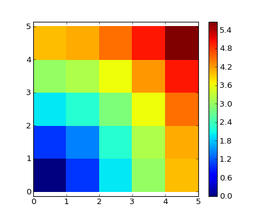

Section contents
With scalars:
>>> a = np.array([1, 2, 3, 4])
>>> a + 1
array([2, 3, 4, 5])
>>> 2**a
array([ 2, 4, 8, 16])
All arithmetic operates elementwise:
>>> b = np.ones(4) + 1
>>> a - b
array([-1., 0., 1., 2.])
>>> a * b
array([ 2., 4., 6., 8.])
>>> j = np.arange(5)
>>> 2**(j + 1) - j
array([ 2, 3, 6, 13, 28])
These operations are of course much faster than if you did them in pure python:
>>> a = np.arange(10000)
>>> %timeit a + 1
10000 loops, best of 3: 24.3 us per loop
>>> l = range(10000)
>>> %timeit [i+1 for i in l]
1000 loops, best of 3: 861 us per loop
Warning
Array multiplication is not matrix multiplication:
>>> c = np.ones((3, 3))
>>> c * c # NOT matrix multiplication!
array([[ 1., 1., 1.],
[ 1., 1., 1.],
[ 1., 1., 1.]])
Note
Matrix multiplication:
>>> c.dot(c)
array([[ 3., 3., 3.],
[ 3., 3., 3.],
[ 3., 3., 3.]])
Exercise: Elementwise operations
- Try simple arithmetic elementwise operations.
- Time them against their pure python counterparts using %timeit.
- Try using dot.
- Generate:
- [2**0, 2**1, 2**2, 2**3, 2**4]
- a_j = 2^(3*j) - j
Comparisons:
>>> a = np.array([1, 2, 3, 4])
>>> b = np.array([4, 2, 2, 4])
>>> a == b
array([False, True, False, True], dtype=bool)
>>> a > b
array([False, False, True, False], dtype=bool)
Logical operations:
>>> a = np.array([1, 1, 0, 0], dtype=bool)
>>> b = np.array([1, 0, 1, 0], dtype=bool)
>>> np.logical_or(a, b)
array([ True, True, True, False], dtype=bool)
>>> np.logical_and(a, b)
array([ True, False, False, False], dtype=bool)
Transcendental functions:
>>> a = np.arange(10)
>>> np.sin(a)
array([ 0. , 0.84147098, 0.90929743, 0.14112001, -0.7568025 ,
-0.95892427, -0.2794155 , 0.6569866 , 0.98935825, 0.41211849])
>>> np.log(a)
array([ -inf, 0. , 0.69314718, 1.09861229, 1.38629436,
1.60943791, 1.79175947, 1.94591015, 2.07944154, 2.19722458])
>>> np.exp(a)
array([ 1.00000000e+00, 2.71828183e+00, 7.38905610e+00,
2.00855369e+01, 5.45981500e+01, 1.48413159e+02,
4.03428793e+02, 1.09663316e+03, 2.98095799e+03,
8.10308393e+03])
Shape mismatches
>>> a = np.arange(4)
>>> a + np.array([1, 2])
Traceback (most recent call last):
File "<stdin>", line 1, in <module>
ValueError: operands could not be broadcast together with shapes (4) (2)
Broadcasting? We’ll return to that later.
Transposition:
>>> a = np.triu(np.ones((3, 3)), 1) # see help(np.triu)
>>> a
array([[ 0., 1., 1.],
[ 0., 0., 1.],
[ 0., 0., 0.]])
>>> a.T
array([[ 0., 0., 0.],
[ 1., 0., 0.],
[ 1., 1., 0.]])
Tip
Array-wise comparisons:
>>> a = np.array([1, 2, 3, 4])
>>> b = np.array([4, 2, 2, 4])
>>> c = np.array([1, 2, 3, 4])
>>> np.array_equal(a, b)
False
>>> np.array_equal(a, c)
True
Note
Linear algebra
The sub-module numpy.linalg implements basic linear algebra, such as solving linear systems, singular value decomposition, etc. However, it is not guaranteed to be compiled using efficient routines, and thus we recommend the use of scipy.linalg, as detailed in section Linear algebra operations: scipy.linalg
Exercise other operations
- Look at the help for np.allclose. When might this be useful?
- Look at the help for np.triu and np.tril.
- Is the transpose a view or a copy? What implications does this have for making a matrix symmetric?
Computing sums:
>>> x = np.array([1, 2, 3, 4])
>>> np.sum(x)
10
>>> x.sum()
10

Sum by rows and by columns:
>>> x = np.array([[1, 1], [2, 2]])
>>> x
array([[1, 1],
[2, 2]])
>>> x.sum(axis=0) # columns (first dimension)
array([3, 3])
>>> x[:, 0].sum(), x[:, 1].sum()
(3, 3)
>>> x.sum(axis=1) # rows (second dimension)
array([2, 4])
>>> x[0, :].sum(), x[1, :].sum()
(2, 4)
Tip
Same idea in higher dimensions:
>>> x = np.random.rand(2, 2, 2)
>>> x.sum(axis=2)[0, 1]
1.14764...
>>> x[0, 1, :].sum()
1.14764...
— works the same way (and take axis=)
Statistics:
>>> x = np.array([1, 2, 3, 1])
>>> y = np.array([[1, 2, 3], [5, 6, 1]])
>>> x.mean()
1.75
>>> np.median(x)
1.5
>>> np.median(y, axis=-1) # last axis
array([ 2., 5.])
>>> x.std() # full population standard dev.
0.82915619758884995
Extrema:
>>> x = np.array([1, 3, 2])
>>> x.min()
1
>>> x.max()
3
>>> x.argmin() # index of minimum
0
>>> x.argmax() # index of maximum
1
Logical operations:
>>> np.all([True, True, False])
False
>>> np.any([True, True, False])
True
Note
Can be used for array comparisons:
>>> a = np.zeros((100, 100))
>>> np.any(a != 0)
False
>>> np.all(a == a)
True
>>> a = np.array([1, 2, 3, 2])
>>> b = np.array([2, 2, 3, 2])
>>> c = np.array([6, 4, 4, 5])
>>> ((a <= b) & (b <= c)).all()
True
... and many more (best to learn as you go).
Exercise: Reductions
- Given there is a sum, what other function might you expect to see?
- What is the difference between sum and cumsum?
Worked Example: data statistics
Data in :download:`populations.txt <../../data/populations.txt>`_ describes the populations of hares and lynxes (and carrots) in northern Canada during 20 years.
You can view the data in an editor, or alternatively in IPython (both shell and notebook):
In [1]: !cat data/populations.txt
First, load the data into a Numpy array:
>>> data = np.loadtxt('data/populations.txt')
>>> year, hares, lynxes, carrots = data.T # trick: columns to variables
Then plot it:
>>> from matplotlib import pyplot as plt
>>> plt.axes([0.2, 0.1, 0.5, 0.8])
>>> plt.plot(year, hares, year, lynxes, year, carrots)
>>> plt.legend(('Hare', 'Lynx', 'Carrot'), loc=(1.05, 0.5))
[source code, hires.png, pdf]

The mean populations over time:
>>> populations = data[:, 1:]
>>> populations.mean(axis=0)
array([ 34080.95238095, 20166.66666667, 42400. ])
The sample standard deviations:
>>> populations.std(axis=0)
array([ 20897.90645809, 16254.59153691, 3322.50622558])
Which species has the highest population each year?:
>>> np.argmax(populations, axis=1)
array([2, 2, 0, 0, 1, 1, 2, 2, 2, 2, 2, 2, 0, 0, 0, 1, 2, 2, 2, 2, 2])
Basic operations on numpy arrays (addition, etc.) are elementwise
This works on arrays of the same size.
Nevertheless, It’s also possible to do operations on arrays of differentsizes if Numpy can transform these arrays so that they all havethe same size: this conversion is called broadcasting.
The image below gives an example of broadcasting:

Let’s verify:
>>> a = np.tile(np.arange(0, 40, 10), (3, 1)).T
>>> a
array([[ 0, 0, 0],
[10, 10, 10],
[20, 20, 20],
[30, 30, 30]])
>>> b = np.array([0, 1, 2])
>>> a + b
array([[ 0, 1, 2],
[10, 11, 12],
[20, 21, 22],
[30, 31, 32]])
We have already used broadcasting without knowing it!:
>>> a = np.ones((4, 5))
>>> a[0] = 2 # we assign an array of dimension 0 to an array of dimension 1
>>> a
array([[ 2., 2., 2., 2., 2.],
[ 1., 1., 1., 1., 1.],
[ 1., 1., 1., 1., 1.],
[ 1., 1., 1., 1., 1.]])
An useful trick:
>>> a = np.arange(0, 40, 10)
>>> a.shape
(4,)
>>> a = a[:, np.newaxis] # adds a new axis -> 2D array
>>> a.shape
(4, 1)
>>> a
array([[ 0],
[10],
[20],
[30]])
>>> a + b
array([[ 0, 1, 2],
[10, 11, 12],
[20, 21, 22],
[30, 31, 32]])
Tip
Broadcasting seems a bit magical, but it is actually quite natural to use it when we want to solve a problem whose output data is an array with more dimensions than input data.
Worked Example: Broadcasting
Let’s construct an array of distances (in miles) between cities of Route 66: Chicago, Springfield, Saint-Louis, Tulsa, Oklahoma City, Amarillo, Santa Fe, Albuquerque, Flagstaff and Los Angeles.
>>> mileposts = np.array([0, 198, 303, 736, 871, 1175, 1475, 1544,
... 1913, 2448])
>>> distance_array = np.abs(mileposts - mileposts[:, np.newaxis])
>>> distance_array
array([[ 0, 198, 303, 736, 871, 1175, 1475, 1544, 1913, 2448],
[ 198, 0, 105, 538, 673, 977, 1277, 1346, 1715, 2250],
[ 303, 105, 0, 433, 568, 872, 1172, 1241, 1610, 2145],
[ 736, 538, 433, 0, 135, 439, 739, 808, 1177, 1712],
[ 871, 673, 568, 135, 0, 304, 604, 673, 1042, 1577],
[1175, 977, 872, 439, 304, 0, 300, 369, 738, 1273],
[1475, 1277, 1172, 739, 604, 300, 0, 69, 438, 973],
[1544, 1346, 1241, 808, 673, 369, 69, 0, 369, 904],
[1913, 1715, 1610, 1177, 1042, 738, 438, 369, 0, 535],
[2448, 2250, 2145, 1712, 1577, 1273, 973, 904, 535, 0]])

A lot of grid-based or network-based problems can also use broadcasting. For instance, if we want to compute the distance from the origin of points on a 10x10 grid, we can do
>>> x, y = np.arange(5), np.arange(5)[:, np.newaxis]
>>> distance = np.sqrt(x ** 2 + y ** 2)
>>> distance
array([[ 0. , 1. , 2. , 3. , 4. ],
[ 1. , 1.41421356, 2.23606798, 3.16227766, 4.12310563],
[ 2. , 2.23606798, 2.82842712, 3.60555128, 4.47213595],
[ 3. , 3.16227766, 3.60555128, 4.24264069, 5. ],
[ 4. , 4.12310563, 4.47213595, 5. , 5.65685425]])
Or in color:
>>> plt.pcolor(distance)
>>> plt.colorbar()
[source code, hires.png, pdf]
Remark : the numpy.ogrid function allows to directly create vectors x and y of the previous example, with two “significant dimensions”:
>>> x, y = np.ogrid[0:5, 0:5]
>>> x, y
(array([[0],
[1],
[2],
[3],
[4]]), array([[0, 1, 2, 3, 4]]))
>>> x.shape, y.shape
((5, 1), (1, 5))
>>> distance = np.sqrt(x ** 2 + y ** 2)
Tip
So, np.ogrid is very useful as soon as we have to handle computations on a grid. On the other hand, np.mgrid directly provides matrices full of indices for cases where we can’t (or don’t want to) benefit from broadcasting:
>>> x, y = np.mgrid[0:4, 0:4]
>>> x
array([[0, 0, 0, 0],
[1, 1, 1, 1],
[2, 2, 2, 2],
[3, 3, 3, 3]])
>>> y
array([[0, 1, 2, 3],
[0, 1, 2, 3],
[0, 1, 2, 3],
[0, 1, 2, 3]])
>>> a = np.array([[1, 2, 3], [4, 5, 6]])
>>> a.ravel()
array([1, 2, 3, 4, 5, 6])
>>> a.T
array([[1, 4],
[2, 5],
[3, 6]])
>>> a.T.ravel()
array([1, 4, 2, 5, 3, 6])
Higher dimensions: last dimensions ravel out “first”.
The inverse operation to flattening:
>>> a.shape
(2, 3)
>>> b = a.ravel()
>>> b = b.reshape((2, 3))
>>> b
array([[1, 2, 3],
[4, 5, 6]])
Or,
>>> a.reshape((2, -1)) # unspecified (-1) value is inferred
array([[1, 2, 3],
[4, 5, 6]])
Warning
ndarray.reshape may return a view (cf help(np.reshape))), or copy
Tip
>>> b[0, 0] = 99
>>> a
array([[99, 2, 3],
[ 4, 5, 6]])
Beware: reshape may also return a copy!:
>>> a = np.zeros((3, 2))
>>> b = a.T.reshape(3*2)
>>> b[0] = 9
>>> a
array([[ 0., 0.],
[ 0., 0.],
[ 0., 0.]])
To understand this you need to learn more about the memory layout of a numpy array.
Indexing with the np.newaxis object allows us to add an axis to an array (you have seen this already above in the broadcasting section):
>>> z = np.array([1, 2, 3])
>>> z
array([1, 2, 3])
>>> z[:, np.newaxis]
array([[1],
[2],
[3]])
>>> z[np.newaxis, :]
array([[1, 2, 3]])
>>> a = np.arange(4*3*2).reshape(4, 3, 2)
>>> a.shape
(4, 3, 2)
>>> a[0, 2, 1]
5
>>> b = a.transpose(1, 2, 0)
>>> b.shape
(3, 2, 4)
>>> b[2, 1, 0]
5
Also creates a view:
>>> b[2, 1, 0] = -1
>>> a[0, 2, 1]
-1
Size of an array can be changed with ndarray.resize:
>>> a = np.arange(4)
>>> a.resize((8,))
>>> a
array([0, 1, 2, 3, 0, 0, 0, 0])
However, it must not be referred to somewhere else:
>>> b = a
>>> a.resize((4,))
Traceback (most recent call last):
File "<stdin>", line 1, in <module>
ValueError: cannot resize an array that has been referenced or is
referencing another array in this way. Use the resize function
Exercise: Shape manipulations
Sorting along an axis:
>>> a = np.array([[4, 3, 5], [1, 2, 1]])
>>> b = np.sort(a, axis=1)
>>> b
array([[3, 4, 5],
[1, 1, 2]])
Note
Sorts each row separately!
In-place sort:
>>> a.sort(axis=1)
>>> a
array([[3, 4, 5],
[1, 1, 2]])
Sorting with fancy indexing:
>>> a = np.array([4, 3, 1, 2])
>>> j = np.argsort(a)
>>> j
array([2, 3, 1, 0])
>>> a[j]
array([1, 2, 3, 4])
Finding minima and maxima:
>>> a = np.array([4, 3, 1, 2])
>>> j_max = np.argmax(a)
>>> j_min = np.argmin(a)
>>> j_max, j_min
(0, 2)
Exercise: Sorting
- Try both in-place and out-of-place sorting.
- Try creating arrays with different dtypes and sorting them.
- Use all or array_equal to check the results.
- Look at np.random.shuffle for a way to create sortable input quicker.
- Combine ravel, sort and reshape.
- Look at the axis keyword for sort and rewrite the previous exercise.
What do you need to know to get started?
Know how to create arrays : array, arange, ones, zeros.
Know the shape of the array with array.shape, then use slicing to obtain different views of the array: array[::2], etc. Adjust the shape of the array using reshape or flatten it with ravel.
Obtain a subset of the elements of an array and/or modify their values with masks
>>> a[a < 0] = 0
Know miscellaneous operations on arrays, such as finding the mean or max (array.max(), array.mean()). No need to retain everything, but have the reflex to search in the documentation (online docs, help(), lookfor())!!
For advanced use: master the indexing with arrays of integers, as well as broadcasting. Know more Numpy functions to handle various array operations.

{kind=link}
{kind=link}